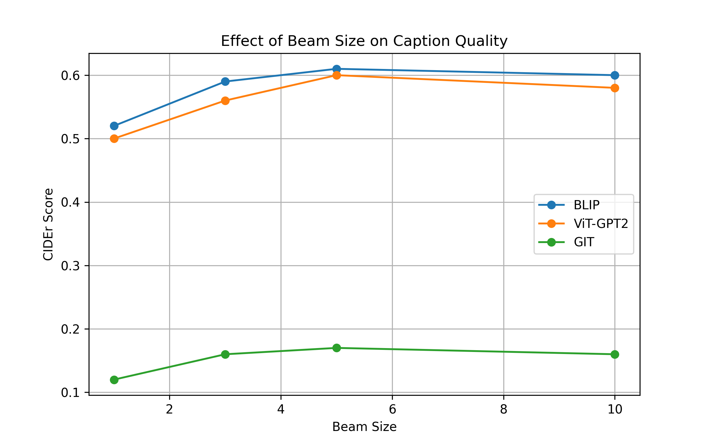
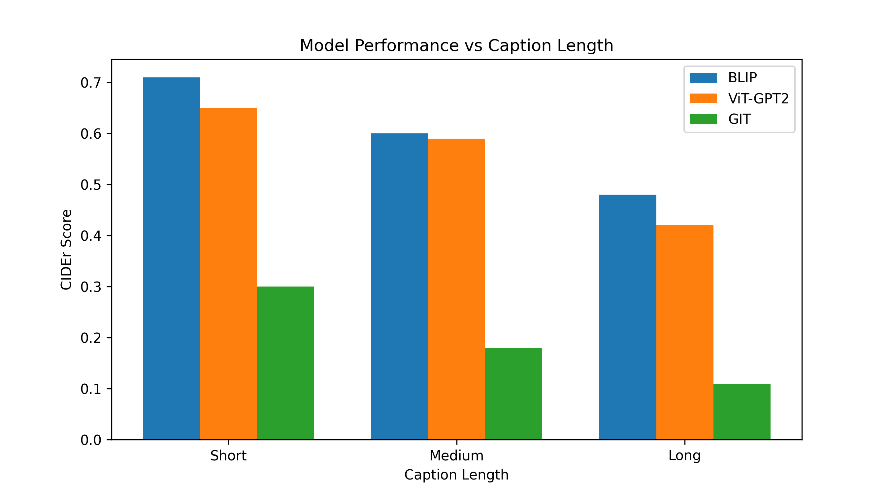

1. What the project does (plain English)
The system is an “image-to-text” pipeline:
- You upload a photo (for example, a dog playing with a ball).
- An AI model looks at the image and generates a short caption like “a brown dog running in the grass with a tennis ball”.
- You can optionally run multiple models and compare how they describe the same picture.
The final user interface is a Streamlit web app that runs publicly (for example on Hugging Face Spaces), so non‑technical users only see a clean web page with an image uploader and buttons.
2. How a non‑technical person uses it
- Open the web link for the app.
- Upload an image (JPG or PNG).
- Choose which models to run (BLIP, ViT‑GPT2, GIT).
- Click “Generate Captions”.
- Read the generated captions and see which one feels most accurate.
Everything heavy (model loading, GPU/CPU handling, metric calculations) happens behind the scenes.
3. Big picture: training → upload → deployment
The project has three main phases:
-
Training (offline)
Models are fine‑tuned on the MS COCO dataset, which contains images and multiple human‑written captions per image. Training scripts live insrc/training/. -
Uploading models to Hugging Face
Trained checkpoints are uploaded to model hubs:pchandragrid/blip-caption-modelpchandragrid/vit-gpt2-caption-modelpchandragrid/git-caption-model
-
Deployment as a Streamlit app
The fileapp.pydefines the public interface. When a user uploads a picture, the app downloads models from Hugging Face (if not already cached), runs them, and returns captions.
4. Project structure (folders & roles)
src/ – core Python package
Contains the reusable “library” code: datasets, training logic, evaluation, and utilities. This is what makes the project look like a real production codebase.
src/data/– dataset classes for COCO-style JSONL + images.src/training/– training entrypoints (Phase 1 & Phase 2).src/evaluation/– functions to compute CIDEr scores.src/utils/– helpers (e.g., creating data subsets).
app.py – main web app
A Streamlit application that:
- Lets users upload images.
- Offers controls for beam size, caption length, etc.
- Loads models either from local folders or from Hugging Face Hub.
- Shows captions side‑by‑side and draws attention heatmaps for BLIP.
plot/ – experiment visuals
Contains small scripts that generate plots summarising key experiments:
beam_experiment_plot.py→ beam size vs caption quality.caption_length_analysis.py→ caption length vs model performance.
docs/ – human documentation
This HTML file (docs/index.html) plus a Markdown report
(docs/PROJECT_REPORT.md) that explain the project in non‑technical language.
5. Important Python files (explained simply)
Web app & UI
-
app.py– main public interface. Handles:- File upload widget.
- Model selection (BLIP, ViT‑GPT2, GIT).
- Generation settings (beam size, max length, length penalty).
- Result display (captions + timing + attention heatmap).
-
app/streamlit_app.py– an additional demo focusing on BLIP, toxicity filtering and attention maps.
Training scripts
-
src/training/train_phase1.py
Fine‑tunes the BLIP model on a subset of COCO. Uses a simpler dataset that always resizes images to 384px. -
src/training/train_phase2.py
A more advanced fine‑tuning phase that uses caption filtering (short/long/mixed), early stopping, and CIDEr evaluation to keep only the best model. -
train_blip_20k_384.py,train_vit_gpt2.py,train_git.py
Older / experiment-oriented training scripts for different architectures and datasets.
Datasets (how the data is read)
-
src/data/coco_384_dataset.py
Reads JSONL annotations and images, resizes images to 384×384 pixels, and prepares joint image+text inputs for BLIP. -
src/data/coco_advanced_dataset.py
Similar, but with extra quality filters:- removes very short captions,
- removes highly repetitive captions,
- keeps only captions with letters (no noise),
- allows focusing on short, long, or mixed caption lengths.
-
src/data/coco_vit_gpt2_dataset.py
Dataset variant for ViT‑GPT2, where the image encoder and text decoder are separate components.
Evaluation & utilities
-
src/evaluation/cider_eval.py
Computes CIDEr scores – a standard metric used to judge the quality of generated captions against human references. -
src/utils/data_subset.py
Creates random subsets (e.g., 20k samples) from a large annotation file, which helps run faster experiments. -
uploadtohf.py
Script that uploads your local trained models to Hugging Face Hub, so the public app can download them.
6. Plots: what they tell us
6.1 Beam size vs caption quality
When the model generates a sentence, it can either pick the best word step‑by‑step (simple), or consider several alternatives in parallel (beam search). Larger “beam sizes” explore more options.

6.2 Caption length vs model performance
Not all captions are equally easy. Short descriptions (e.g., “a cat on a bed”) are easier than long, detailed ones.

7. Where the heavy models live
Instead of keeping large model files inside this repository, they are stored on Hugging Face Hub:
pchandragrid/blip-caption-modelpchandragrid/vit-gpt2-caption-modelpchandragrid/git-caption-model
The app automatically downloads them when needed and caches them. This is why public deployment is possible without bloating the repository.
8. How to run things locally (for completeness)
Start the web app
python -m venv .venv
source .venv/bin/activate
pip install -r requirements.txt
streamlit run app.pyRegenerate the plots
source .venv/bin/activate
python plot/beam_experiment_plot.py
python plot/caption_length_analysis.py9. Small glossary (non‑technical)
- Model – the “brain” that has learned patterns from data.
- Caption – a short sentence describing an image.
- Fine‑tuning – starting from an existing model and training it further on your own dataset.
- CIDEr score – a number that says how close a generated caption is to human‑written captions (higher is better).
- Beam search – a smarter way to generate sentences by exploring several possible word sequences.
- Streamlit – a Python tool that turns scripts into shareable web apps.